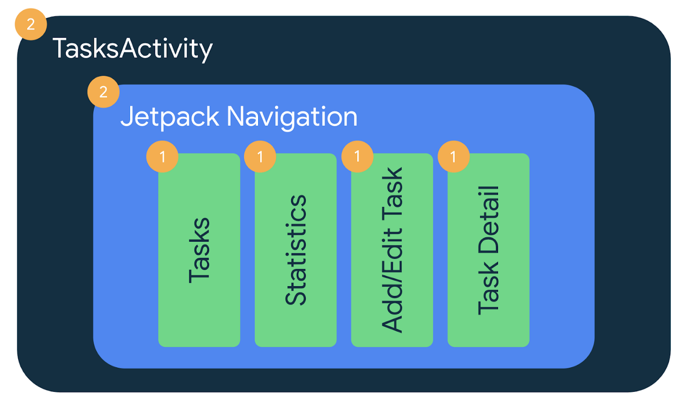

Migrating Architecture Blueprints to Jetpack Compose
This blog post tells the story of how the team migrated Architecture Blueprints to Jetpack Compose.
As part of our effort to modernize the app architecture guidance, we want to experiment with different UI patterns to see what works best, find similarities and differences between the alternatives, and ultimately consolidate those learnings as best practices.
To make our findings as easy to follow as possible, we needed a sample that has a familiar business case and isn’t too complicated. And… who doesn’t know about TODO apps? We chose Architecture Blueprints! Historically, Blueprints served as an experimental playground for architecture choices. What a great fit for this as well!
Architecture Blueprints app in action
The patterns we want to experiment with are obviously affected by the different APIs available nowadays. The new kids in town are Jetpack Compose’s State APIs! As Compose seamlessly works with any Unidirectional Data Flow pattern, we’ll use Compose to render UI to make a fair comparison.
This blog post tells the story of how the team migrated Architecture Blueprints to Jetpack Compose. As LiveData is also considered an alternative in our experiments, we left the sample as it was at the time of the migration. In this refactoring, the ViewModel classes and the data layer were left untouched.
⚠️ The architecture used in this LiveData-based codebase doesn’t fully follow the latest architecture best practices. In particular, LiveData shouldn’t be used in the data or domain layers — Flows and coroutines should be used instead.
Now that the context is clear, let’s dive in on how we approached refactoring Blueprints to Jetpack Compose. You can check out the full code on the main branch.
✍️ Planning a gradual migration
Before doing any actual coding work, the team created a migration plan to make sure everyone was on board with the proposed changes. The ultimate goal was to have Blueprints as a single-activity application with screens as composable functions, and using the recommended Compose Navigation library to move between screens.
Luckily, Blueprints was already a single-activity app that used Jetpack Navigation to move between different screens implemented with Fragments. To migrate to Compose, we followed the Navigation interoperability guidance that recommends hybrid apps to use the fragment-based Navigation component and use fragments to hold view-based screens, Compose screens, and screens that use both views and Compose. Unfortunately, it’s not possible to mix Fragment and Compose destinations in the same Navigation graph.
The goal of a gradual migration is to ease code reviews and maintain a shippable product throughout the migration. The migration plan involved three steps:
-
Migrate the content of each screen to Compose. Each screen could be individually migrated to Compose, including their UI tests. Fragments then become the container/host of each migrated screen.
-
Migrate the app to Navigation Compose — which removes all Fragments from the project — and migrate the Activity UI logic to root composables. End-to-end tests are also migrated at this point.
-
Remove View system dependencies.
And that’s what we did! 🧑💻 Fast-forward ⏩ two weeks, we migrated the Statistics screen (PR), Add/Edit task screen (PR), Task detail screen (PR), and the Tasks screen (PR); and we merged the final PR which migrated Navigation and Activity logic to Compose, including removing unused View system dependencies.
 How we gradually migrated Blueprints to Compose
💡 Migration highlights
During the migration, we encountered some Compose-specific quirks worth highlighting:
🧪 UI tests
Once you start adding Compose to your app, tests that assert Compose UI need to use Compose testing APIs.
For screen-level UI tests, instead of using the launchFragmentInContainer<FragmentType> API, we used the createAndroidComposeRule<ComponentActivity> API that allows us to grab string resources in tests. These tests run in both Espresso and Robolectric. Because Compose already supports all of this, no extra changes were required. For example, you can compare the code in AddEditTaskFragmentTest that was migrated to AddEditTaskScreenTest. Note that if you use ComponentActivity, you need to depend on the androidx.compose.ui:ui-test-manifest artifact.
For end-to-end or integration tests, we didn’t find any problems either! Thanks to the Espresso and Compose interoperability, we use Espresso assertions to check Views, and Compose APIs to check Compose UI. Here’s how the AppNavigationTest looked at one point during the migration to Compose.
🤙 ViewModel events
We did have problems with the way ViewModel events were handled in Blueprints. Blueprints implemented an Event wrapper solution to send commands from the ViewModel to the UI. However, that’s not something that works nicely in Compose. Our recent guidance recommends modeling those “events” as state, and that’s what we did during the migration.
Looking at the showing messages on the screen event use case, we replaced the Event<Int> type of the LiveData to Int? This also models the scenario where there is no message to show to the user. In this particular use case, the ViewModel also requires a confirmation from the UI whenever the message has been displayed. See the diff between both implementations in the following code:
/* Copyright 2022 Google LLC.
SPDX-License-Identifier: Apache-2.0 */
class AddEditTaskViewModel(
private val tasksRepository: TasksRepository
) : ViewModel() {
- private val _snackbarText = MutableLiveData<Event<Int>>()
- val snackbarText: LiveData<Event<Int>> = _snackbarText
+ private val _snackbarText = MutableLiveData<Int?>()
+ val snackbarText: LiveData<Int?> = _snackbarText
+ fun snackbarMessageShown() {
+ _snackbarText.value = null
+ }
}
Even though this might seem like more work at first glance, it guarantees that the message is displayed on the screen!
In the UI code, the way to make sure the event is handled only once is by calling event.getContentIfNotHandled(). This approach works okayish in Fragments but it completely breaks in Compose when you are writing natural Compose code! Because recompositions can happen at any time in Compose, the event wrapper is not a valid solution. If the event is processed and the function gets recomposed (something that happened very regularly while testing this approach), then the snackbar will be canceled, and the user might miss the message. That’s an unacceptable UX issue! The event wrapper solution shouldn’t be used in Compose apps.
Note that you can come up with Compose code that avoids recomposing parts of the function in certain scenarios, however, the event wrapper solution is limiting how the UI must be implemented in that case. Using the event wrapper solution in Compose is discouraged.
See the following code snippet with the before (event wrapper) and after (event as state) code. Because showing messages on the screen is UI logic and our screen composables were getting complex, we used a plain state holder class to manage that complexity (e.g. see AddEditTaskState).
/* Copyright 2022 Google LLC.
SPDX-License-Identifier: Apache-2.0 */
// FRAGMENTS CODE CONSUMING THE EVENT WRAPPER SOLUTION
- class AddEditTaskFragment : Fragment() {
- override fun onViewCreated(view: View, savedInstanceState: Bundle?) {
- ...
- viewModel.snackbarText.observe(
- lifecycleOwner,
- Observer { event ->
- event.getContentIfNotHandled()?.let {
- showSnackbar(context.getString(it), Snackbar.LENGTH_SHORT)
- }
- }
- )
- }
- }
// COMPOSE CODE CONSUMING USER MESSAGES AS STATE
// State holder for the AddEditTask composable.
// This class handles AddEditTask's UI elements' state and UI logic.
+ class AddEditTaskState(...) {
+ init {
+ // Listen for snackbar messages
+ viewModel.snackbarText.observe(viewLifecycleOwner) { snackbarMessage ->
+ if (snackbarMessage != null) {
+ // If there's a previous message showing on the screen
+ // stop showing it in favor of the new one to be displayed
+ currentSnackbarJob?.cancel()
+ val snackbarText = context.getString(snackbarMessage)
+ currentSnackbarJob = coroutineScope.launch {
+ scaffoldState.snackbarHostState.showSnackbar(snackbarText)
+ viewModel.snackbarMessageShown()
+ }
+ }
+ }
+ }
👌 When in doubt, choose app correctness
While refactoring, it might be tempting to migrate everything at hand to Compose. While that’s totally fine, you shouldn’t sacrifice your app’s User Experience or correctness. The whole point of doing a gradual migration is that the app is always in a shippable state.
This happened to us while migrating some screens to Compose. We didn’t want to do too many migrations at the same time, and migrated some of the screens to Compose before migrating from the Event wrapper. Instead of handling the Event wrapper in Compose and providing a suboptimal experience, we kept handling those messages in the Fragment while the rest of the code for the screen was in Compose. See, for example, the state of the TasksFragment during the migration.
🧐 Challenges
Not everything went as smoothly as it might have seemed. Even though converting Fragment content to Compose is straightforward, migrating from Navigation Fragments to Navigation Compose took a bit more time and consideration.
There’s a need to expand and improve the guidance on different aspects that will make migrating to Compose easier in the future. This work sparked conversations and we hope to have new guidance on this soon! 🎊
As a Navigation beginner ✋ and the person that handled the migration to Navigation Compose, I faced the following challenges:
-
No code in the docs showed how to navigate with optional arguments! Thanks to Tivi’s navigation graph, I found my way and solved the issue (follow the issue to improve the docs here).
-
Migrating from a XML-based Navigation graph and SafeArgs to Kotlin DSL should be a straightforward, mechanical task. However, it wasn’t that easy for me considering I didn’t work on the original implementation. Some guidance about how to do it properly would’ve helped me (follow the issue to improve the docs here).
-
More than a challenge, this point is a gotcha! Navigation UI does some work for you already when it comes to navigating. As this is not available in Compose, you need to keep an eye on that and do it manually. For example, keeping the backstack clean when navigating between Drawer’s screens requires special
NavigationOptions(see example here). This is already covered in the docs, but you need to be aware that you need it!
🧑🏫 Conclusions
Overall, migrating from Navigation Fragments to Navigation Compose was a fun task to do! Funnily enough, we spent more time waiting for peer reviews than migrating the project itself! Creating the migration plan and getting everyone on the same page definitely helped to set expectations early and alert peers of lengthy incoming reviews.
We hope you enjoyed reading about our approach to migrating to Compose, and we’re looking forward to sharing more about the experiments and improvements we’ll be doing in Architecture Blueprints.
If you’re interested in seeing Blueprints with Compose code, take a look at the dev-compose branch. And in case you want to go through the PRs of the gradual migration, here’s the list:
- Statistics screen (PR),
- Add/Edit task screen (PR),
- Task detail screen (PR),
- Tasks screen (PR); and
- the final PR which migrated Navigation and Activity logic to Compose, including removing unused View system dependencies.